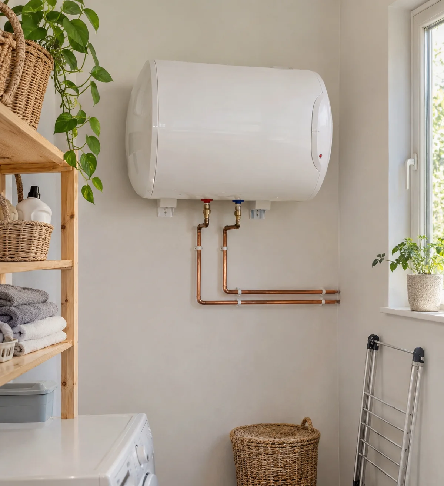
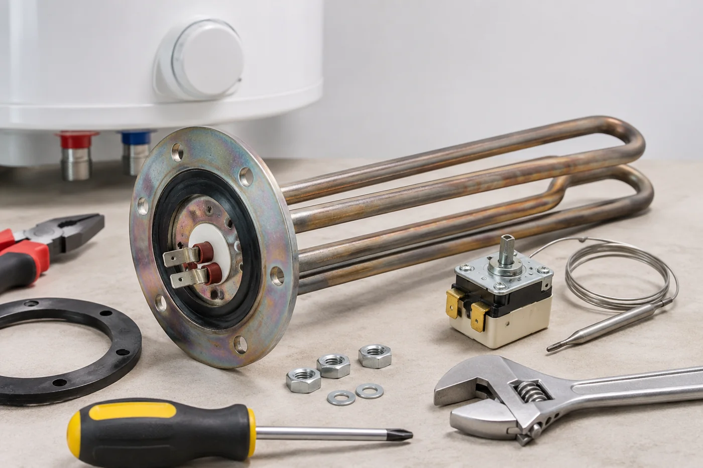

PLOMBERIE · PARIS ET BANLIEUE
Dépannage et remplacement de chauffe-eau
Nous assurons le dépannage et le remplacement de vos ballons d’eau chaude et cumulus.

Le sens du service.
CE QUE VOUS CONSTATEZ
Votre eau chaude
ne répond plus comme avant ?
Absence d’eau chaude
Décrivez-nous ce qui se passe et depuis quand. Nous échangeons sur l’appareil concerné.
Une fuite sur le ballon
Précisez où l’eau apparaît, sans démonter l’équipement. Nous évaluons avec vous la situation.
Un fonctionnement inhabituel
Signalez les changements observés. Un échange permet de préparer la suite, sans diagnostic automatique.

Visuel d’illustrationBALLONS D’EAU CHAUDE ET CUMULUS
Réparer ou remplacer,
selon votre installation.
Nous assurons le dépannage de ballons d’eau chaude et de cumulus en configuration verticale ou horizontale. Selon la situation, l’intervention peut concerner le remplacement de la résistance, du thermostat ou de l’appareil complet. Nous échangeons sur son état, sa capacité et ses raccordements avant d’organiser la suite.
- Dépannage et réparation.
- Remplacement de résistance.
- Remplacement de thermostat.
- Remplacement du ballon d’eau chaude.
VOS QUESTIONS
Avant de nous contacter.
Quelles informations sur le chauffe-eau transmettre ?+
Préparez le modèle, la capacité si elle est connue, l’orientation verticale ou horizontale et une description des symptômes.
Faut-il remplacer tout l’appareil ?+
Cela dépend de la situation. Nous échangeons avec vous sur les symptômes pour évaluer les possibilités de réparation ou de remplacement.
Quand une intervention est-elle possible ?+
Appelez-nous pour connaître les disponibilités et organiser une intervention. Aucun délai fixe n’est annoncé.
PARLONS DE VOTRE BESOIN
Un projet, une fuite,
une question ?
Nous prenons le temps d’échanger sur votre situation.